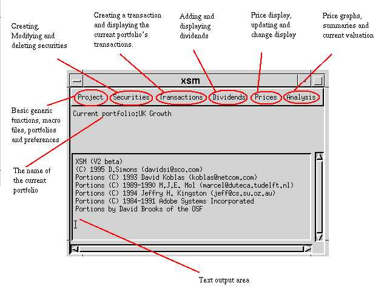

This section provides an overview of the XSM. If you are not familiar with XSM, or this is the first time, you have used it, you are recommended to refer to the Before You Start description.
The main window with XSM, as illustrated, consists of many menus and two key work areas. The top most work area, shows information that applies to the current status of the system, for example, the name of the working portfolio. The botton area, provides a general output area, that can be used by both the builtin XSM functions and user written macros.

The menus provide a comprehensive set of features:
Other features that you may wish to read about include: